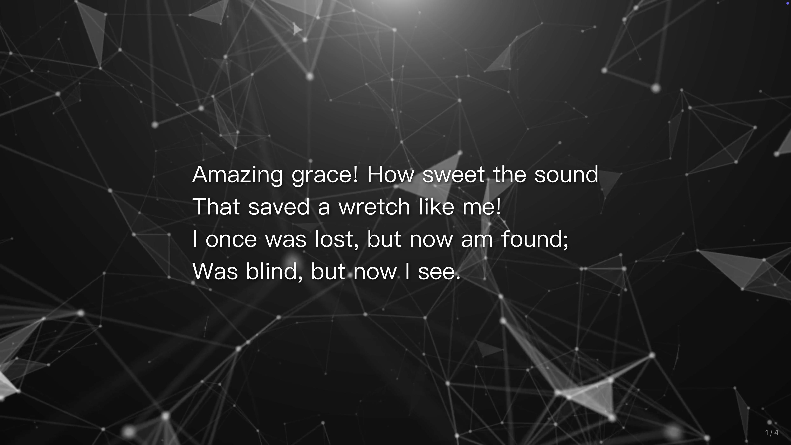
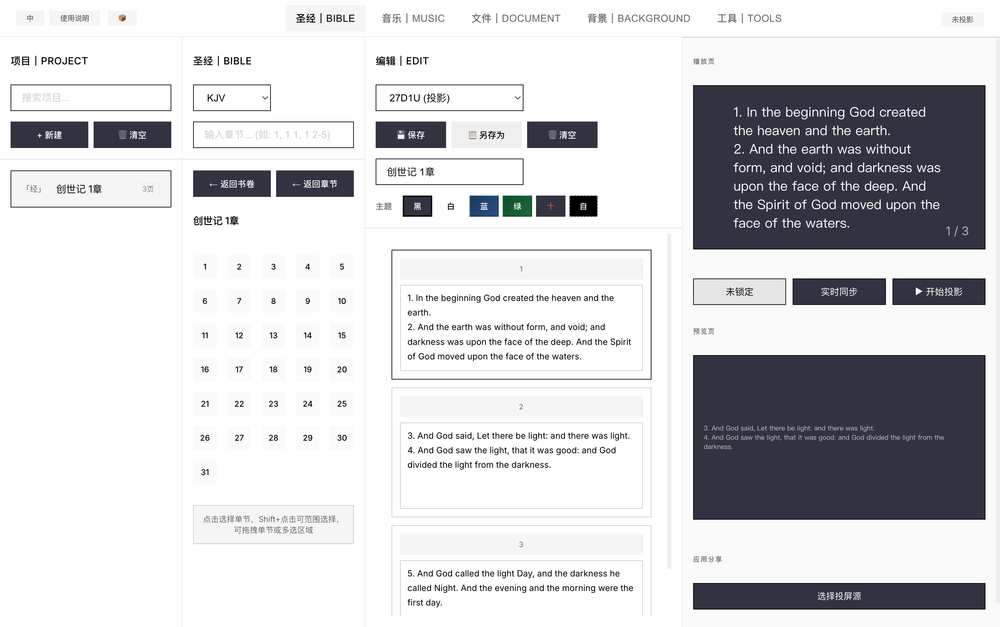
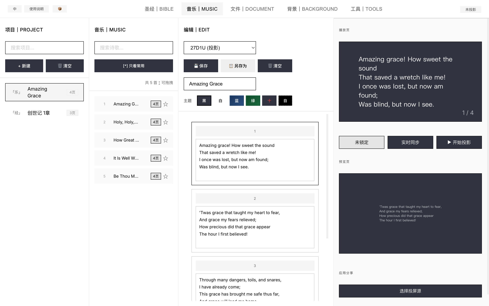

简影投屏
极简主义教会投影软件
免费 · 开源 · 跨平台
极简主义教会投影软件
免费 · 开源 · 跨平台
支持 KJV 公共领域圣经，通过数据包导入更多版本
幻灯片式歌词展示，支持 5 首内置公共领域诗歌，可通过数据包扩展至数万首
支持 JPG/PNG/WebP 静态图片和 MP4/MOV/WebM 动态视频背景
主投影、舞台屏、直播屏、外接显示 — 一套操作控制全部
内建倒计时和时钟工具，直接投屏到投影窗口
通过 .jydata 格式导入更多圣经版本和诗歌库，灵活扩展



通过 .jydata 数据包导入更多圣经版本和诗歌库
获取中文和合本圣经、NIV 英文圣经、数万首赞美诗等扩展内容
获取数据包